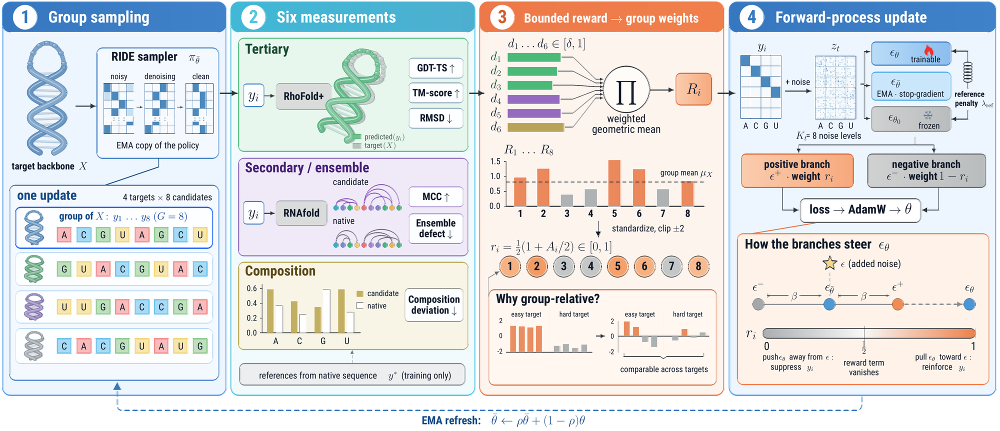
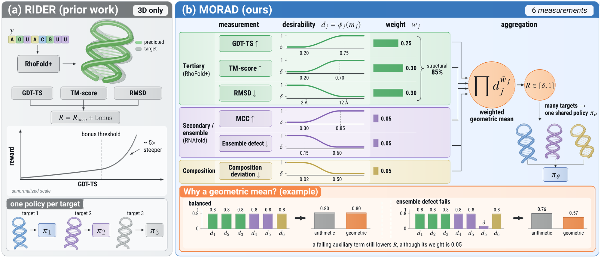
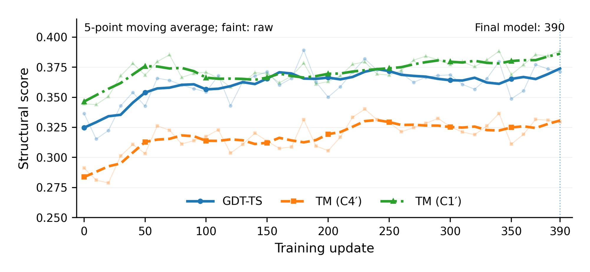

MORAD
Reinforcement Learning with Multi-Objective Rewards for RNA Inverse Design

Abstract
Method
MORAD post-trains one backbone-conditioned diffusion policy across many target backbones, so the trained model designs sequences for a new backbone directly at inference, with no per-target optimization.
Shared-policy online post-training
Backbone-conditioned group sampling, group-relative reward normalization and a forward-process diffusion objective, applied to the pretrained RIDE model.
Six-objective reward
Tertiary geometry (GDT-TS, TM-score, RMSD), base pairing (MCC), ensemble behavior (normalized ensemble defect) and sequence composition.
Bounded desirability, geometric mean
Each measurement is mapped to a bounded desirability score and the scores are combined with a weighted geometric mean, so no single objective dominates.
The MORAD reward

Each measurement \(m_j\) runs between a low anchor \(a_j\) and a high anchor \(b_j\); \(\tilde w_j = w_j / \sum_{k\in\mathcal J} w_k\) normalizes the weights over the available measurements \(\mathcal J\).
| Measurement | \(a_j\) | \(b_j\) | \(w_j\) |
|---|---|---|---|
| GDT-TS | 0.20 | 0.75 | 0.25 |
| TM-score | 0.20 | 0.70 | 0.30 |
| RMSD (Å) | 12.0 | 2.0 | 0.30 |
| Secondary-structure MCC | 0.30 | 0.85 | 0.05 |
| Ensemble defect / nucleotide | 0.60 | 0.15 | 0.05 |
| Composition deviation | 0.50 | 0.02 | 0.05 |
Results
All models are evaluated on the same 153 test targets. MORAD is the policy after update 390; best values are in bold.
Candidate 0 of each target, structures predicted with RhoFold+.
| Model | GDT-TS ↑ | TM (C4′) ↑ | RMSD (Å) ↓ | TM (C1′) ↑ | Success ↑ | Recovery ↑ | lDDT (C4′) ↑ | pLDDT ↑ | Coarse clash ↓ |
|---|---|---|---|---|---|---|---|---|---|
| RiboDiffusion | 0.3132 | 0.2839 | 10.9215 | 0.3613 | 0.2549 | 0.5165 | 0.6174 | 0.6937 | 73.5383 |
| gRNAde (T=0.1) | 0.3591 | 0.3179 | 8.8374 | 0.3642 | 0.2484 | 0.5115 | 0.6607 | 0.6482 | 23.7261 |
| RDesign | 0.3291 | 0.2902 | 10.3441 | 0.3392 | 0.2549 | 0.4720 | 0.6368 | 0.6202 | 40.4457 |
| RIDE | 0.3300 | 0.2841 | 9.7199 | 0.3538 | 0.2484 | 0.5039 | 0.6622 | 0.6671 | 22.7503 |
| MORAD | 0.3827 | 0.3400 | 7.9196 | 0.3855 | 0.3007 | 0.5056 | 0.6774 | 0.6726 | 11.9438 |
Candidate 0; EternaFold predictions compared with base pairs extracted from the native 3D structures.
| Model | Precision ↑ | Recall ↑ | F1 ↑ | MCC ↑ |
|---|---|---|---|---|
| RiboDiffusion | 0.3563 | 0.3074 | 0.3212 | 0.3267 |
| gRNAde (T=0.1) | 0.7276 | 0.6099 | 0.6482 | 0.6734 |
| RDesign | 0.7084 | 0.6110 | 0.6462 | 0.6566 |
| RIDE | 0.6472 | 0.5717 | 0.5939 | 0.6110 |
| MORAD | 0.7824 | 0.6816 | 0.7226 | 0.7295 |
153 targets, ViennaRNA.
| Model | MFE ∼ | EFE ∼ | NED ↓ | PE ↓ | MFEfreq ↑ |
|---|---|---|---|---|---|
| RiboDiffusion | -21.716 | -22.847 | 0.6056 | 0.4284 | 0.2980 |
| gRNAde (T=0.1) | -28.092 | -28.918 | 0.3458 | 0.2652 | 0.4289 |
| gRNAde (T=0.8) | -25.186 | -26.212 | 0.3830 | 0.3260 | 0.3266 |
| RDesign | -28.863 | -29.708 | 0.3349 | 0.2775 | 0.3961 |
| RIDE | -23.614 | -24.643 | 0.3906 | 0.3059 | 0.3350 |
| MORAD | -30.149 | -30.937 | 0.2830 | 0.2102 | 0.4402 |
MFE / EFE: minimum and ensemble free energy (kcal/mol), shown for context. NED: normalized ensemble defect. PE: positional entropy. MFEfreq: probability of the minimum-free-energy structure.
Two policies post-trained from the same pretrained RIDE with the same data, optimizer and schedule; only the reward differs.
| Measurement | RIDE | + Structural reward | + MORAD reward |
|---|---|---|---|
| GDT-TS ↑ | 0.3300 | 0.3627 | 0.3694 |
| TM-score ↑ | 0.2841 | 0.3194 | 0.3358 |
| RMSD (Å) ↓ | 9.720 | 8.369 | 8.207 |
| C1′ TM ↑ | 0.3538 | 0.3818 | 0.3919 |
| MCC ↑ | 0.6208 | 0.6612 | 0.6978 |
| F1 ↑ | 0.6103 | 0.6568 | 0.6901 |
| ED (nt) ↓ | 29.08 | 26.85 | 24.27 |
| ED/nt ↓ | 0.3872 | 0.3569 | 0.3256 |
| Recovery ↑ | 0.5033 | 0.5097 | 0.5124 |
| Hpair ↓ | 0.3249 | 0.2851 | 0.2800 |
| pMFE ↑ | 0.3281 | 0.3880 | 0.3847 |
| MFE (kcal/mol) | -23.77 | -29.81 | -26.49 |
| GC fraction | 0.5304 | 0.5912 | 0.4970 |
| Hamming diversity | 0.2971 | 0.2224 | 0.2607 |
MFE, GC fraction and within-target Hamming diversity are shown for context.
Training dynamics

Data
The test set is built separately from the training set. It comprises 71 RNA3DB entries, drawn from RNA3DB components that contain no training target, and 82 entries curated from the RCSB PDB. No test sequence exactly matches a training sequence. Both target pools are released on Hugging Face.
Get started
The repository contains the full training and evaluation code, configuration files for every reported run, and scripts that regenerate each table and figure of the paper.
git clone https://github.com/Gabrile166/MORAD.git && cd MORAD bash scripts/setup_third_party.sh # RhoFold+, US-align, EternaFold bash scripts/download_assets.sh # RIDE + RhoFold+ weights, data, MORAD checkpoint bash scripts/evaluate_test153.sh morad # evaluate the released model on the 153 test targets bash scripts/train_morad.sh # train MORAD from pretrained RIDE (4 GPUs)
Citation
@misc{tang2026morad,
title = {{MORAD}: Reinforcement Learning with Multi-Objective Rewards for {RNA} Inverse Design},
author = {Tang, Jixin and Guo, Ji and Zhao, Jun},
year = {2026}
}